Overview
Research
User Flow
I started off by researching the user flow of online pizza orders. I did this by looking at various websites and apps. In general, I found that the overall structure included these steps:
- arrive on the landing page
- find and press the "order online" button
- select your pizza(s)
- customize your pizza(s)
- select add-ons
- enter your address & billing information
- order confirmation
Research
Pain Points
While looking at user flows, I also noted some pain points in existing sites. The main things that stood out to me:
Sites tend to be very busy, with high contrast and high saturation.
I don't know if this is an industry standard or marketing ploy, but it made it difficult to navigate and read pages.
Stores with multiple locations often ask for users to input their address before they're shown the menu.
This is likely due to the fact that different locations have different ingredients in stock, but from a UX perspective, it asks users to do extra work without any incentives.
A lot of the UI for customization is either dated or confusing.
Most sites don't show any indicator of progress throughout the steps for ordering.
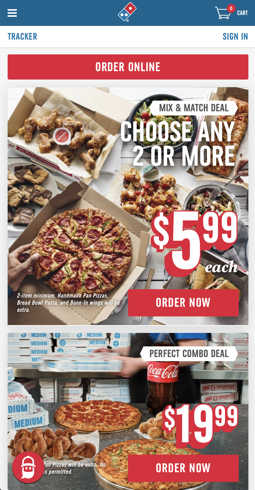
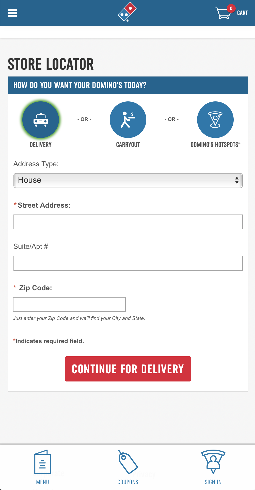
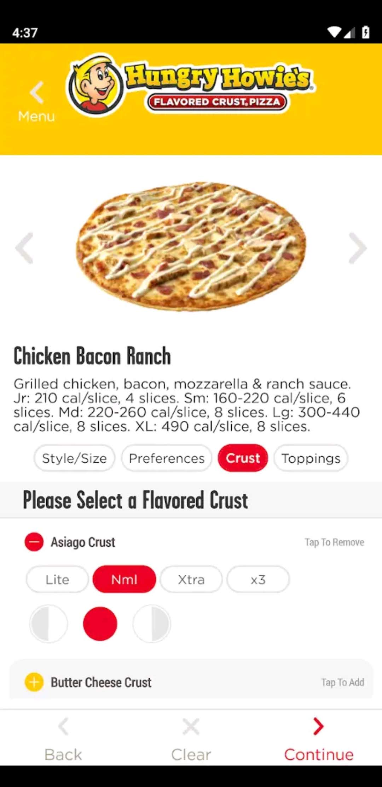
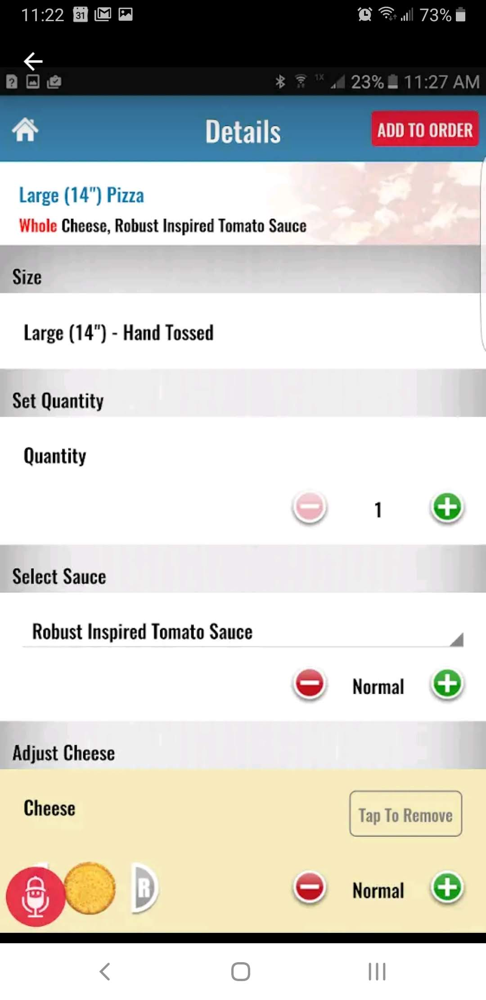
Insight
Keeping these things in mind, I decided to make the overall aesthetic of my prototype simple and modern, add an auto-locate feature for stores, and design a system to show progress.
Prototyping
Sketches
Referring to my user flow and research, I did some quick wireframe sketches.
I prefer to wireframe by hand before moving into digital wireframes, since it's a lot quicker.
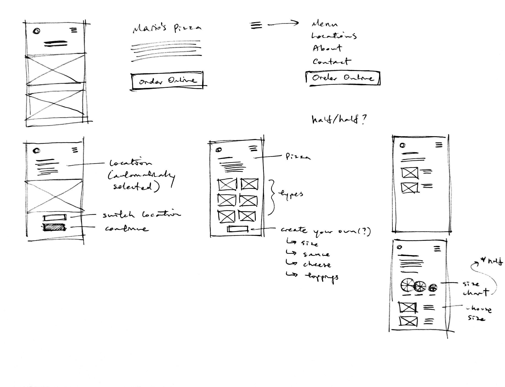
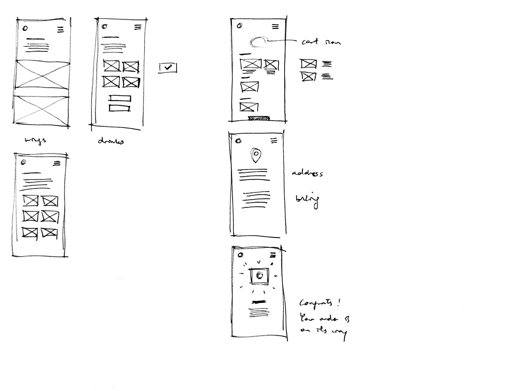
Prototyping
Digital Wireframes
Moved into digital wireframes on Adobe XD. Main considerations at this point:
- how to structure the location page
- how to make choosing pizza sizes intuitive
- how to best show a progress indicator with limited screen real estate
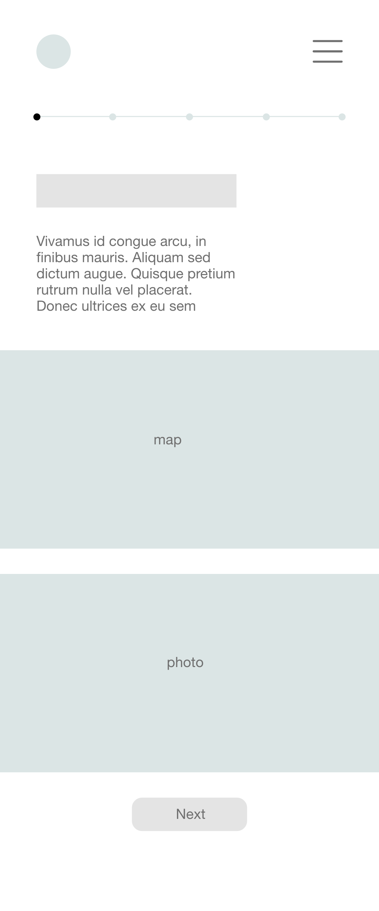
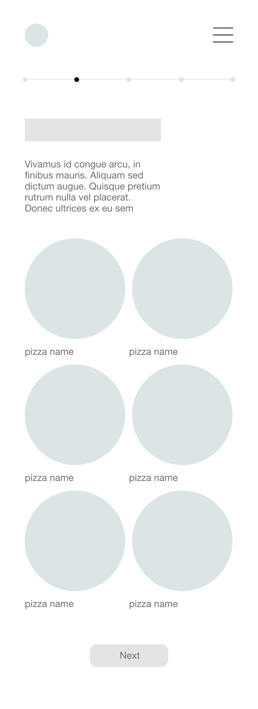
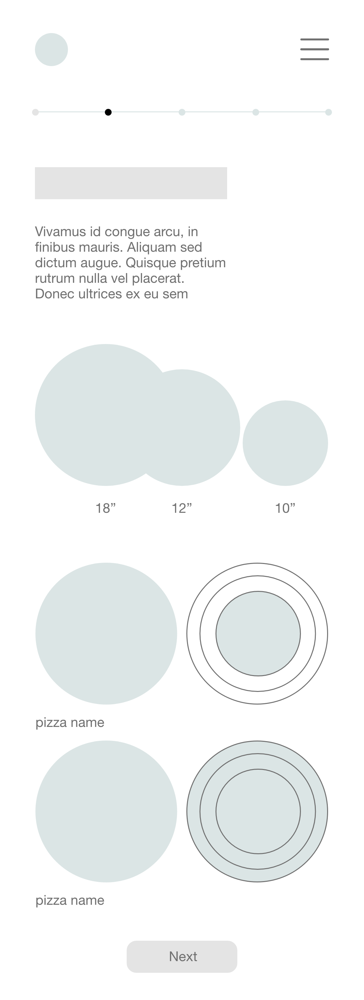
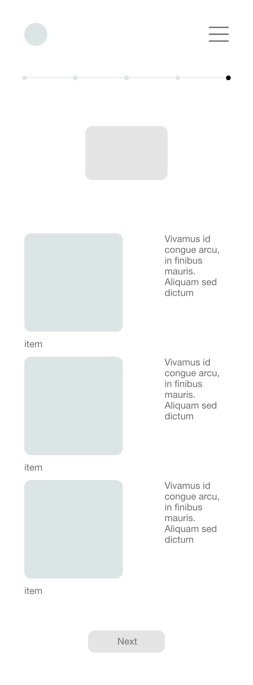
Prototyping
Refining Wireframes
While this has more to do with branding than UX, I couldn't resist some basic typeface and color exploration. I tried picking colors and typefaces that resembled those in industry, and felt rustic and hearty. I also iterated on the customization UI here.
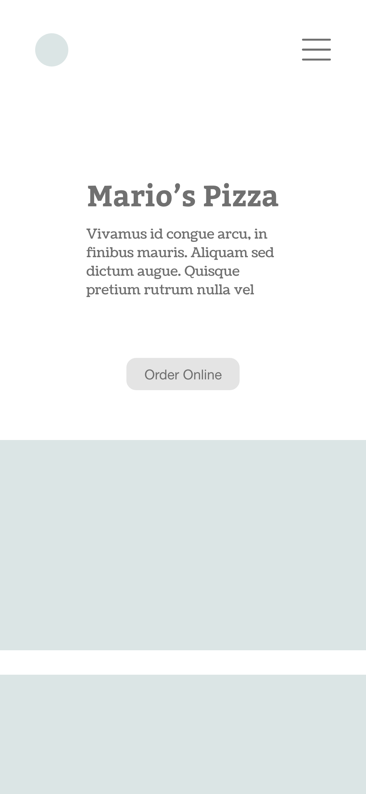

 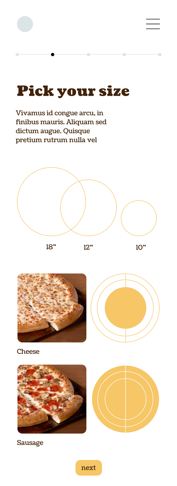
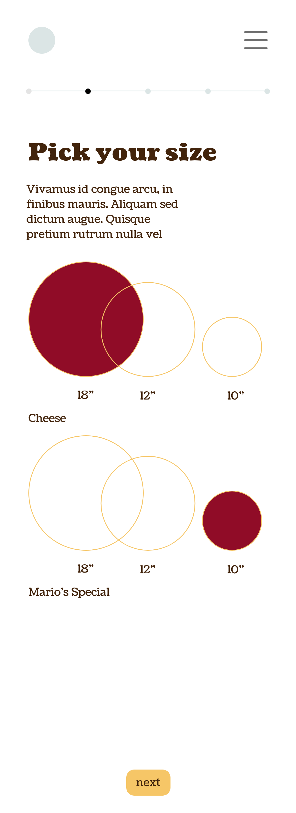
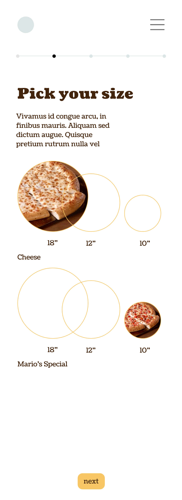
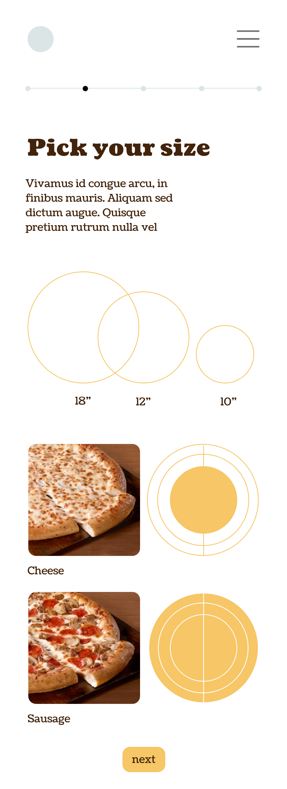
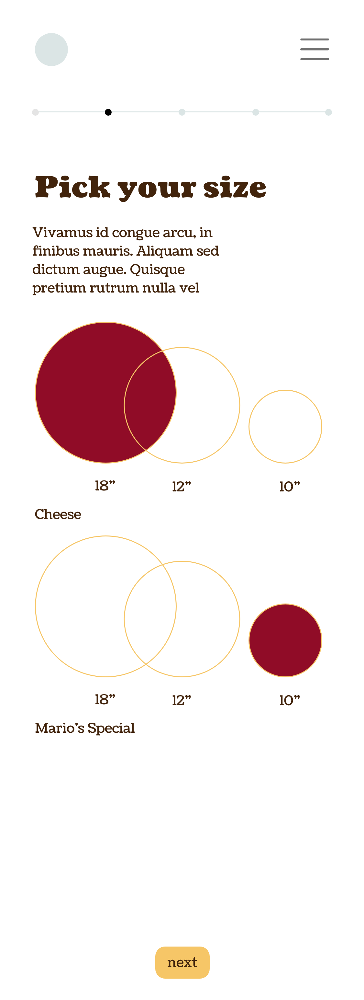
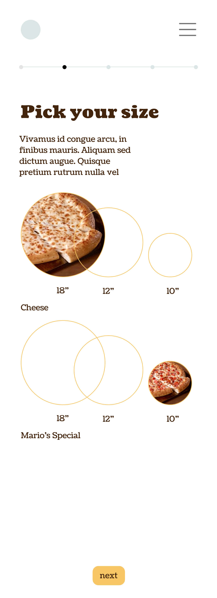
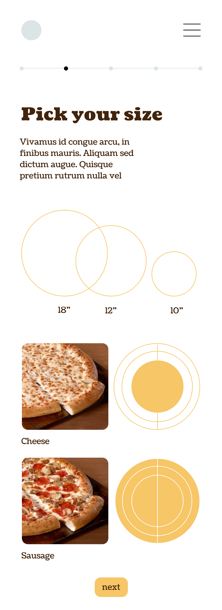
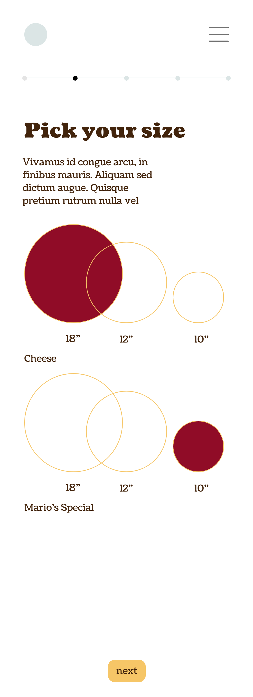
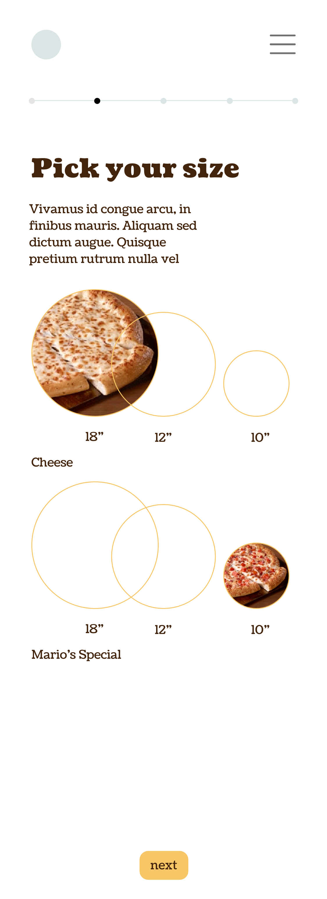
Prototyping
High-fi
Solidified the visual approach, added details (add/remove buttons, price placement), refined overall user flow, and created a clickable prototype.
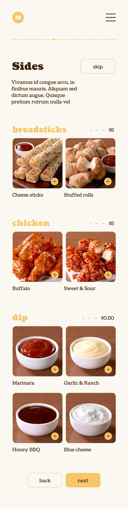
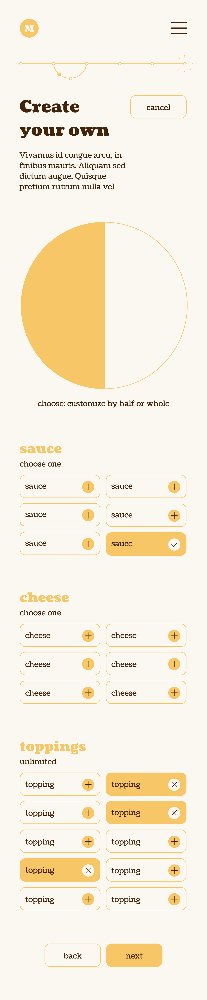
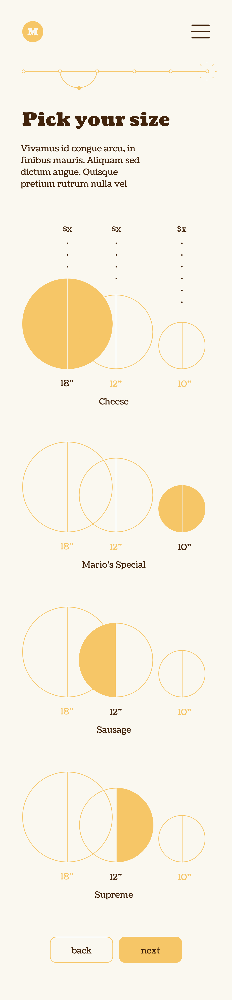
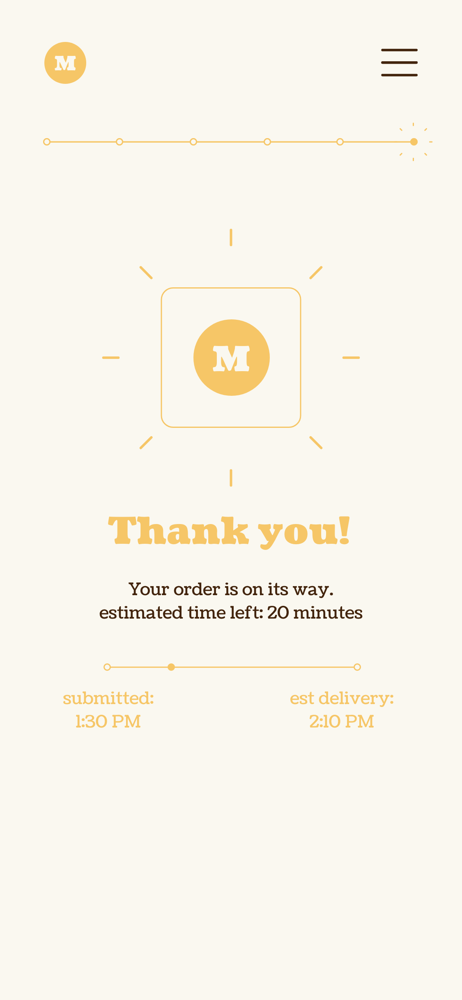
Conclusion